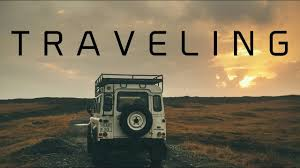
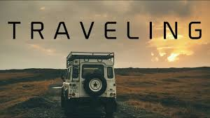
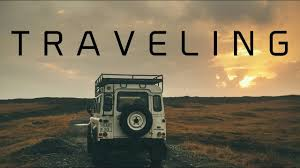

HOME
ACADEMICS
ACHIEVEMENTS
INTERESTS

WHAT ARE YOUR INTERESTS??
Having hobbies and interests outside of the workplace allows you to explore your passions and become a more well-rounded person.Cooking,painting,travelling,playing chess,playing badminton are some of my hobbies.

 
